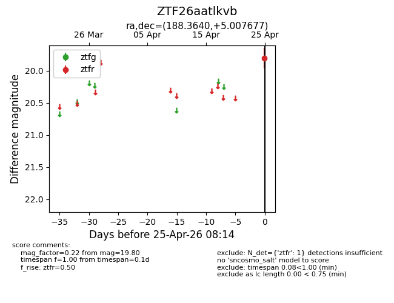
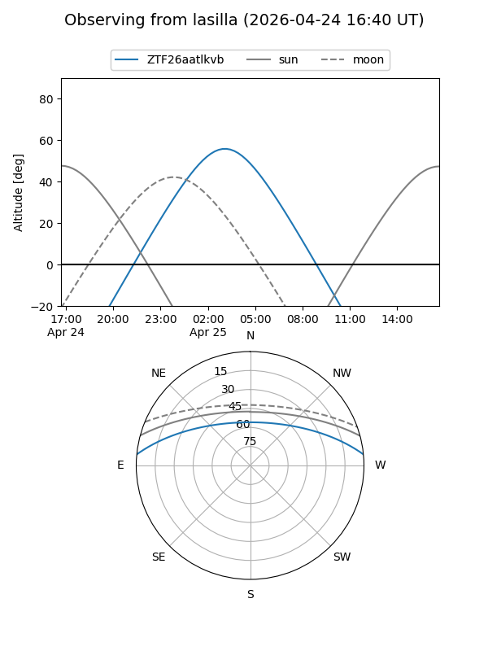
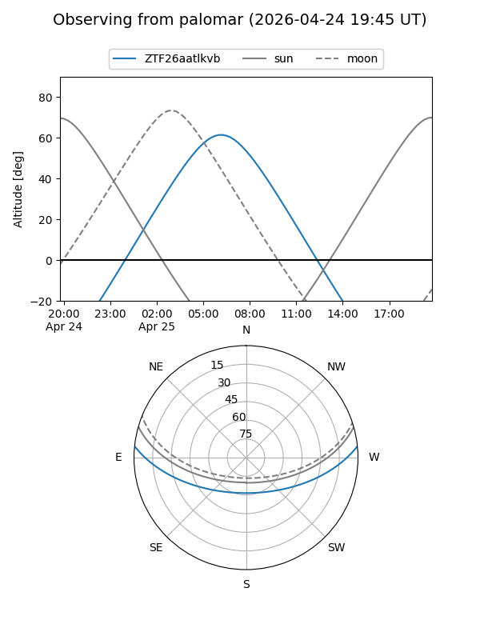

ZTF26aatlkvb
Target ZTF26aatlkvb at 2026-04-25 08:15
Aliases and brokers:
FINK: link
Lasair: link
ALeRCE: link
alt names
ZTF26aatlkvb (ztf,fink_ztf)
Coordinates:
equatorial (ra, dec) = 188.3640,+5.00768
equatorial (HMS+DMS) = 12:33:27.36,+05:00:27.64
galactic (l, b) = (291.1749,+67.46803)
Flags:
Photometry:
last ztfr=19.80
1 ztfr detections
Lightcurve

Visibility


Additional plots